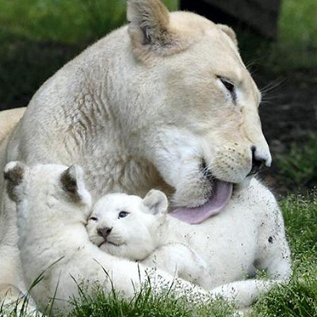

LION BLANC
Ce magnifique animal ne se rencontre qu’exceptionnellement dans certaines réserves d’Afrique du Sud. Selon les croyances africaines, le Lion blanc est divin et croiser sa route porte bonheur.
L’HISTOIRE DU LION BLANC :
Bien que signalés depuis des siècles, les premières observations « officielles » de Lions Blancs remontent aux années 1940. Mais ce n’est que dans les années 1970 que leur existence fut enfin révélée au grand public dans le livre «Les Lions Blancs de Timbavati». L’auteur y relate l’histoire de deux lionceaux, Temba (« espoir » en zoulou) et Tombi (« fille »), qui furent observés puis recueillis dans la réserve privée de Timbavati, adjacente au Parc National Kruger (Afrique du Sud). Suite à la mort de leur mère, ces deux jeunes lions furent confiés au Zoo National de Prétoria et fondèrent l’une des premières lignées de Lions Blancs élevés en captivité. D’autres lignées sont issues d’individus provenant de la région du Parc National Kruger.
UNE ESPECE DISTINCTE OU UN ALBINOS ?
Ni l’un ni l’autre !
Le Lion blanc est une «variété » de la sous-espèce Panthera leo krugeri, le lion du Kruger. Il ne s’agit donc pas d’une espèce ou d’une sous-espèce à part entière. Les lions blancs ne sont pas non plus atteints d’albinisme, qui est un défaut de pigmentation de la peau, des poils et des yeux résultant de l’absence de mélanine. En effet, les Lions blancs ont les coussinets, les narines et les lèvres noirs, leurs yeux peuvent être de couleur noisette, bleu-gris ou verts.
COMMENT APPRAISSENT LES LIONS BLANCS ?
Le Lion blanc est le fruit d’une mutation génétique appelée leucistisme. Le gène à l’origine de cette apparence inhibe le dépôt de pigment noir, la mélanine, sauf à l’extrémité des poils. La couleur du pelage varie alors du blond au blanc presque pur, la crinière des mâles étant de couleur blonde ou crème au lieu d’être noire. Cette mutation est portée par un gène dit récessif, les deux parents doivent ainsi être tous les deux porteurs de ce gène pour qu’au moins l’un des petits soit blanc.
LE SAVIEZ-VOUS ?
A l’opposé du leucistisme, certains félins (léopards, jaguars, servals, tigres) sont sujets au mélanisme : une excessive proportion de mélanine dans la peau rend leur apparence totalement noire.
Le Lion du Kruger, appelé aussi Lion du Transvaal, détient le record du monde de poids avec un mâle de 312 kg, malheureusement abattu en 1964.

Testez vos connaissances